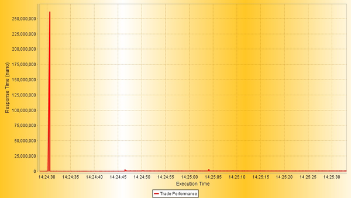
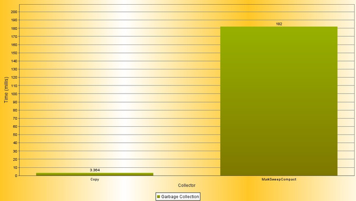
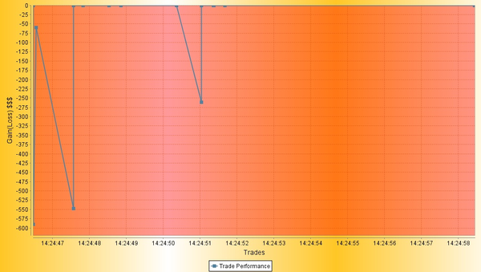
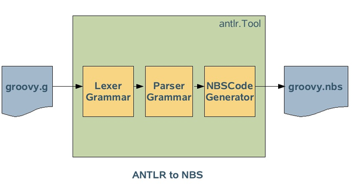

30 March 2007
|
Jim Clarke |
Jim's Hot Links: |
Jim Clarke has been doing some interesting work, investigating ways to automate the generation of NBS files (used by the new Schliemann project to define tokens and grammar) from ANTLR files. He is interested in this in connection with the GroovyChart project, about which he also talks in the interview below.
I am presently a Principal Engineer in Sun Microsystem's Original Equipment Manufacturer (OEM) Software Sales group. OEM's goal is to get partners that create hardware or software products to include Sun's software in their solutions. A central example is our team's responsibility for licensing Java to Cell Phone handset manufacturers. My main duties are to help explain Sun software to our OEM partners and to explore new technologies that might benefit our OEM partners. Lately, I have been focused on Java Realtime, Java TV, and Telco Service Delivery Platforms. I have been with Sun for 9 years, and all of that time working with Java. Prior to Sun, I was doing independent consulting primarily based on C++ and Corba in Telco. I reside in Orlando, Florida., USA.
I have been using NetBeans since Sun acquired it in 1999 and it was called Forte for Java. Prior to this time, I was an ardent UNIX/vi type of developer, having used that since my early days with Unix at AT&T. I have to admit NetBeans was clumsy at first, but I have seen a marked improvement over the years to where I now use it exclusively for development.
On a previous assignment, we used NetBeans IDE 3.5 for our RFID product, with a team of about 20 developers, and found it to be more than adequate to support that rapid development environment. Part of this product even included a NetBeans module for partners to add in their own extensions to the product base.
Since that time, I have used NetBeans 4.0 through 5.5 and I am now starting to play with the 6.0 development release.
What I like:
Things that I think are needed:
For Groovy, I would like integration with Java Project types, a GUI Editor, debugger support, and the ability to add Libraries to a Groovy scripting project.
I started looking at Groovy about a year ago in preparation for a talk at JavaOne on Sensor Networks. We decided to use Groovy to see how fast we could develop the demo and to see how well Groovy works. I have been hooked ever since.
My philosophy on tools and languages is that I want them to be mainly simple and quick, but at the same time allow me the flexibility to do complex things for those occasional problems that always come up in projects. Groovy does this by its seamless integration with the Java language. I can create Groovy scripts/classes most of the time, but when I need to, I can just use a Java class right inside Groovy. That is cool...
More recently, we had to create a Java Realtime Demo that included displays of performance and JVM metrics. We ended up using an open source package, JFreeChart. At the time, I thought: "Wouldn't it be cool to apply the Groovy SwingBuilder concept to JFreeChart?" So, that's when I started work on the java.net project GroovyChart. So, right now I can use Groovy to create the following kinds of charts:
So, just about any kind of chart. What I have to finish is some of the low level mapping of Datasets, etc. In the end, you'll get the same benefits that you get from SwingBuilder, with a top down view of the component tree, simplified building commands, etc. The results are illustrated below. First, you see a graph of the Java Memory Pools in the JRTS 2.0 VM (Sun Java Real-time System), taken from the VM JMX MBeans:
Next, you see a graph of the execution time for a trade, where the peaks indicate a delay caused by either GC or system interupts:

And here's a graph of the Garbage Collectors in the JRTS 2.0 VM, taken from the VM JMX MBeans:

Finally, this graph show the money lost due to delays caused by GC or System interrupts in executing trades:

This last graph shows the opportunity (gain/loss) for a trade because it executed later than it should have. For a limit buy order, the stock price would have risen after the instant the stock should have traded, hence the stock price is higher than the limit buy order requested. For a stop-loss, or limit sell order, the stock price would have fallen after the instant the stock should have traded, hence the actual trade price is lower than the sell order wanted. There is a potential for a gain if the stock goes the opposite direction, but it is felt that because stocks trend in a direction and the limit orders are placed based on the trend, that this usually will be a loss. Also, some brokerage houses guarantee limit orders, so it is the brokerage house that is taking the hit in this case...
This year at JavaOne, my colleague Jim Connors and I have a session, "The Sun Java Real-Time System meets Wall Street", where we will show the GroovyChart-enabled GUI. The source for this will be posted on the GroovyChart java.net site.
Obviously, being a NetBeans fanatic, I found the Coyote NetBeans plugin that supports Groovy. While this did some basic things, I found it lacking. It needed an indentation engine, code-completion, support for adding in Java files, the ability to add libraries just as it is done in a Java project, hyperlinks to JavaDoc and a GUI editor that supports SwingBuilder. So several months back I started developing an Indentation Engine. I actually completed one, which was a nasty experience, when I heard about the upcoming Schliemann Project in NetBeans 6.0. It was obvious to me that I could do more with Schliemann in a shorter time, so I abandoned that original effort.
Actually, my experience with lexical analyzers and parsers goes back to my 'C' and Unix days with Lex and Yacc. We would have to write conversion routines from legacy system data structures to Unix, and I figured out that by using Lex/Yacc we could save a lot of hand coding time.
In my first Java project, I had to convert interface data from IBM Mainframes into our Java program using Cobol CopyBooks. I ran across a Java lexer/parser developed in 1995 at Georgia Tech called CUP and found that it did a reasonable job. (CUP was created by Scott Hudson who is part of the Graphics Visualization and Usability Center and the College of Computing at Georgia Tech. Cup is now maintained at University of Munich.) After that I worked some with JavaCC, and more recently came across ANTLR in the Coyote and Groovy projects.
My interest in Groovy and Coyote crossed paths with Schliemann and I was seeing a lot of traffic on the Groovy mailing list on how to create an NBS (NetBeans Scripting) grammar file. I knew there was an ANTLR grammar for Groovy, so it was just obvious that the best thing to do was look at generating the NBS grammar from the ANTLR grammar. The main ANTLR program takes in "antlr" grammar files and produces Java files to support the particular grammar provided. I then started to investigate how to plugin a different backend processor to the ANTLR program, that would produce NBS output rather than Java output.
Before going further, here's a visual summary of the flow from ANTLR format to NBS format:

Typically, lexer/parsers have an analyze phase where they scan over the input and when certain syntax is recognized, an action occurs. In the main ANTLR program, there are options for plugging in different backends, or CodeGenerators, that do different things when syntactical elements are recognized. The default is to produce Java code to support the particular grammar, other options include HTML and DocBook. HTML produces HTML files that represent the Lexer Tokens and Grammar from the input grammar. Because this was the most similar generator to what NBS required, I started off by using this one as the basis for creating an NBSCodeGenerator class.
There were some design issues with ANTLR itself that I had to deal with. First, all the generators are hard-coded into the main Java class, antrl.Tool. So when the command line option "-html" is encountered, it sets up a hardcoded class name that points to antr.HTMLCodeGenerator.class. To add in my NBSCodeGenerator, I had to do the same kind of thing. A better approach would be to make this more extensible, by allowing a mechanism to define this on the fly.
In antlr.Tool.java, I made three changes, as outlined below.
boolean genHTML = false;
boolean genNBS = false;
else if (args[i].equals("-nbs")) {
genNBS = true;
genDiagnostics = false;
setArgOK(i);
}
if (genHTML) {
return "HTML";
}
if (genNBS) {
return "NBS";
}
The other design issue is that the CodeGeneration classes have a hard dependency on the antrl.Tool class. This constricts the CodeGeneration classes to be within the antlr package, because many methods and members only have package visibility. A better approach would be to make this an interface dependency rather than a concrete class dependency.
The first step was to modify the HTML genHeader and genTrail methods. In genHeader, I took out the normal HTML header and just replaced it with an 'NBS' style comment block. In genTrail, I just took out the HMTL close.
ANLTR treats each recognized entity as a RuleSymbol, no matter whether it is a Token or Grammar Rule. However, there are differences in the way NBS defines tokens and syntax that need to be handled differently in the NBSGenerator. An example of this is that a token is represented as follows:
TOKEN:name:
While syntax is represented like this:
name =
Below is an example of how this is handled:
if(doingLexRules)
{
_print("TOKEN:");
_print(s.getId());
_print(":( ");
} else {
_print(s.getId());
_print("= ");
}
The CodeGeneration interface uses a call back mechanism, so that when certain types of RuleSymbols are encountered, different generator methods are called back into the CodeGeneration implementation. Within these methods, I made changes targeted to the NBS grammar syntax.
For example, in the gen(CharRangeElement) method, I changed the range character from ".." to "-", to match the NBS format:
/** Generate code for the given grammar element.
* @param blk The character-range reference to generate
*/
public void gen(CharRangeElement r) {
//print(r.beginText + ".." + r.endText + " ");
print(r.beginText + "-" + r.endText + " ");
}
The above would produce 'a'-'z', or even '\u00C0'-'\u00D6'.
Some example output from the NBS Generator using the "groovy.g" grammar file from the Groovy project is as follows:
############################################################
# ANTLR - generated NBS file from groovy.g
#
# ANTLR Version 2.7.7 (20070322); 1989-2005
############################################################
TOKEN:QUESTION: ( '?' )
TOKEN:LPAREN: ( '(' )
TOKEN:RPAREN: ( ')' )
TOKEN:LBRACK: ( '[' )
TOKEN:RBRACK: ( ']' )
TOKEN:LCURLY: ( '{' )
...
...
TOKEN:STRING_LITERAL: ( "'''"
( STRING_CH
| ESC
| '"'
| '$'
| STRING_NL
| '\'' )*
"'''"
| '\''
( STRING_CH
| ESC
| '"'
| '$' )*
'\''
| "\"\"\"" STRING_CTOR_END
| '"' STRING_CTOR_END )
...
...
...
compilationUnit = ( SH_COMMENT )
nls
( packageDefinition
| ( statement ) )
( sep ( statement ) )* EOF
nls = ( NLS )
annotationsOpt = ( annotation nls )*
...
...
...
Sure, but one thing I need to do is verify that the NBS syntax being produced is correct. Also, the HTMLGenerator creates two HTML files, one for the Lexer and one for the Parser. My current NBSGenerator does the same thing, however, my intent is to generate only one NBS file.
Here is the current version of the generator: NBSCodeGenerator
Well, it would be nice to have support for automating the inclusion of new scripting languages in NetBeans IDE. As a part of this, I could see a wizard to help in doing this, at least to bootstrap the NBS file. It may be harder to automatically generate sections like syntax coloring, though. Also, I would like to support JavaCC... Perhaps, in addition, I would like to go back to my roots and support "CUP".
The key for supporting new languages within NetBeans IDE is to fully integrate them with the existing features like those that support Java today. I think that the Schliemann approach is the correct first step toward this goal.